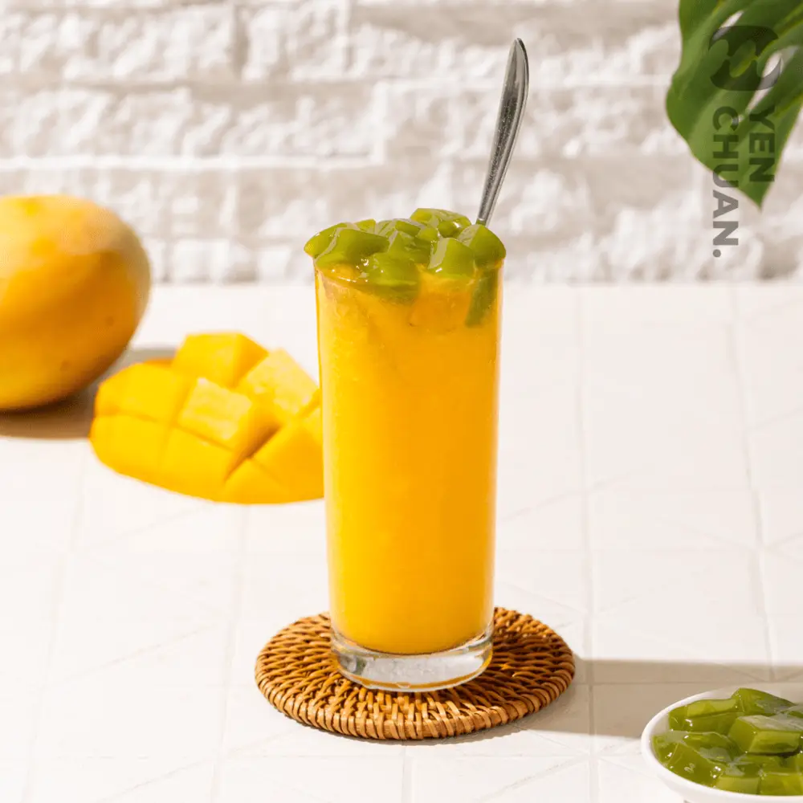
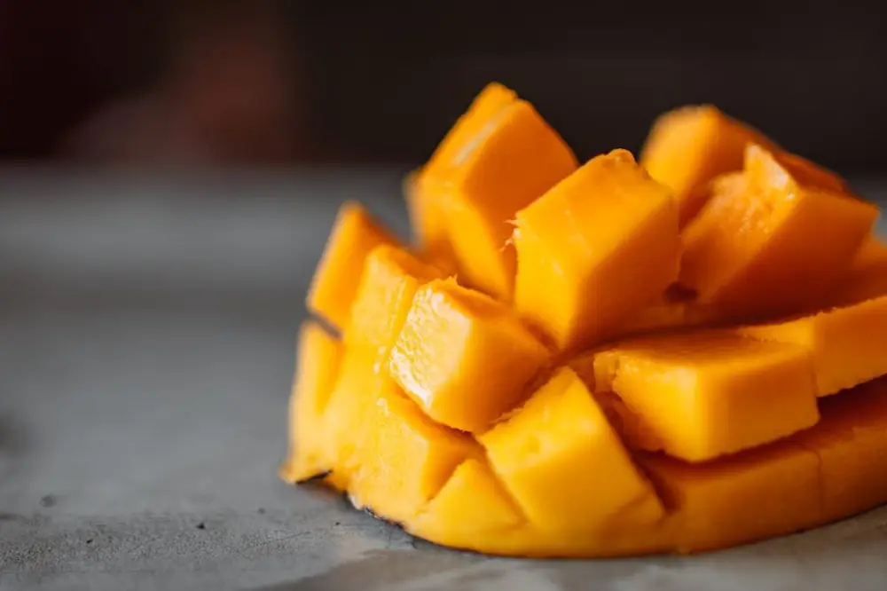
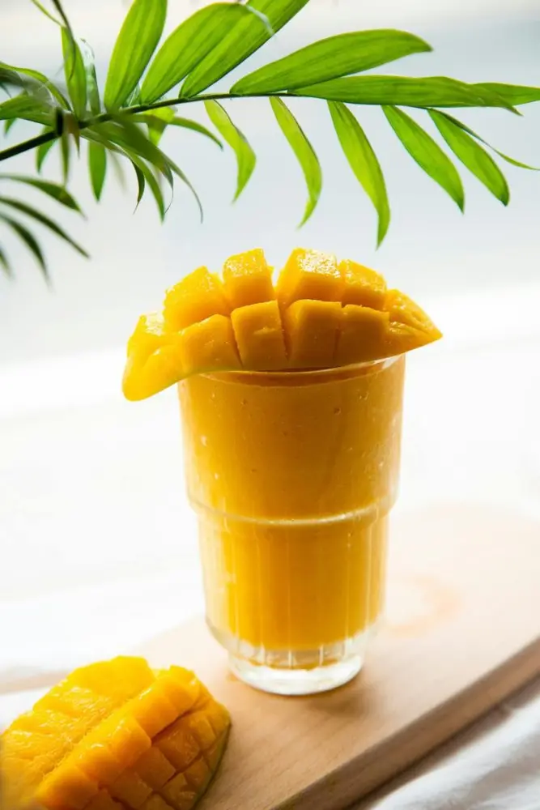
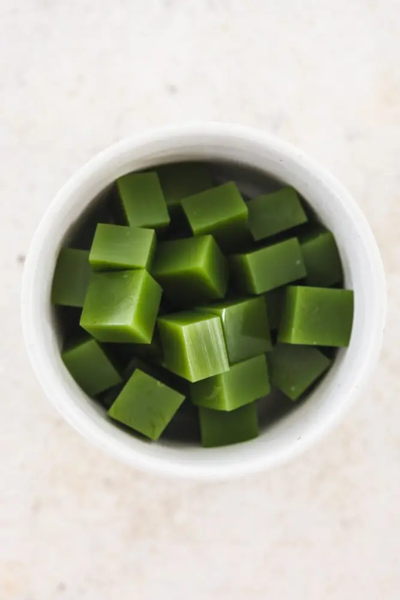
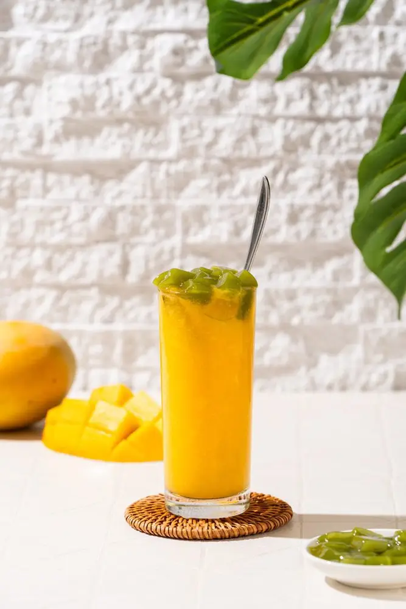

Articles / Recipes
Happy Summer – time for mango matcha mix!
2024-09-23 · Recipes, Recipes

It’s the summer season! Ready to go tropical with some fruit-themed delights? We’ve got your back – try out this mango matcha mix!

Why mango?
When you think of summer fruits, mango is about as tropical as it can get! This fruit packs a sweet, aromatic punch, making it very popular in Southeast Asia. Some countries even call it the King of Fruits!
Sliced or cubed, mango is a classic companion for many Asian desserts, including shaved ice, jellies, sundaes and more. Naturally it’s also found in bubble tea, be it fruit teas or milkshakes.
What’s more, mango is great for your health too. The fruit is jam-packed with important nutrients and vitamins: In fact, one cup of mango provides 67% of the daily Vitamin C you need!
It also contains various anti-oxidants and minerals, which helps maintain heart health and lower blood pressure.


Matcha magic!
Want to spice up your typical mango drink? Matcha jelly would do the trick!
Simply add a generous dollop of matcha jelly onto your mango smoothie, and it’s transformed into a layered artistic drink. For extra topping fun, try adding tapioca pearls as well!
What’s more, the layering also extends to the flavour: The matcha jelly adds matcha’s iconic grassy taste to the drink, while mango’s sweetness balances out the tea’s bitterness. The result? A unique combo that’s truly memorable!
Mango matcha mix
Start your summer with some tropical flair – this refreshing drink is not only delicious, but also healthy to boot!
What you’ll need
How to make
Mix the matcha jelly powder with hot water, then refrigerate until set. Cut the resulting jelly into cubes
Blend the mango with ice cubes into a smoothie
Take an empty glass. Carefully pour the syrup alongside the inner walls to cover it. Add the smoothie, then top up with the matcha jelly. Enjoy!
Feel free to play around with the ingredients. Try adding tapioca pearls or crystal boba, or blend the mango with other fruits!

Get started!
Ready to give this tropical treat a try?
Pick up the ingredients with us!